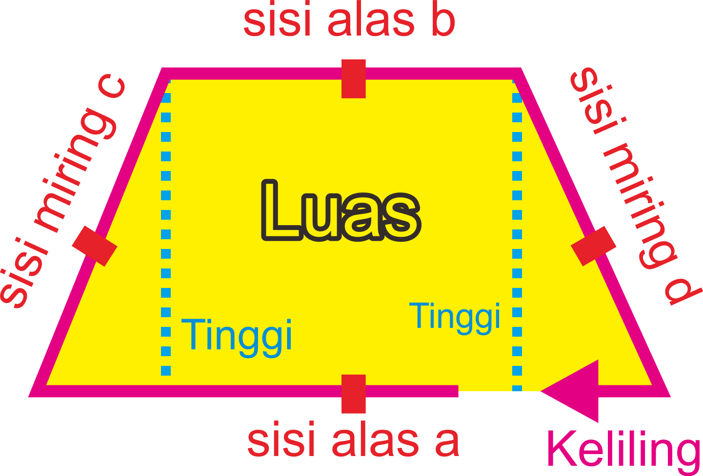

Apa yang ingin dicari

Masukkan sisi alas a
Masukkan sisi alas b
Masukkan sisi miring c
Masukkan sisi miring d
Masukkan sisi alas a
Masukkan sisi alas b
Masukkan tinggi
Masukkan sisi alas a
Masukkan sisi alas b
Masukkan Luas

Apa yang ingin dicari